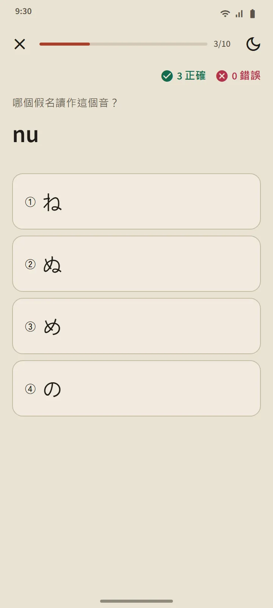

兼作課程列表的字表
「平假名」和「片假名」頁面從首頁的「日語基礎」部分打開。頂部的彙總卡片統計你已認識的文字；下方的字表分為三組：清音（46 個文字）、濁音・半濁音（濁點和半濁點）以及拗音（きゃ、しゅ、ちょ 等）。實心格子表示「已記住」，空心描邊的格子表示正在學習。

一行一課
字表的每一行就是一節課：可以點按聽發音的文字框、羅馬字、已記住標記、每個文字的筆順，以及「你能讀的詞」：僅由學到該行為止的文字組成的真實詞典單詞，羅馬字藏在按鈕後面，讓你先嚐試自己讀。課程以「測驗這一行」按鈕收尾。

讀音規則
每張字表的最後一組講解初學者容易栽跟頭的規則：平假名中的小寫 っ 和長音；片假名中的長音符號 ー、小寫 ッ 以及外來語組合（ファ、ティ、ウィ）。每條規則都附有你能讀的例詞。
十題一組的測驗，不重新安排複習
假名測驗有三種題型：由文字選羅馬字、由羅馬字選文字、由發音選文字。一個文字連續答對三次後就成為已記住，答錯則退回「學習中」。與單詞和漢字不同，文字不會重新安排複習：當你能把它們全部讀出來，字表就完成了。測驗總結會顯示你的得分、新記住的文字和答錯的文字。

從哪裏開始
首次打開應用程式時，會詢問你是從零開始，還是已經會讀平假名。你的回答決定首頁上的一個建議：零基礎的人是「從平假名開始」，其他人是前 20 個單詞。沒有必須完成的清單：同一張卡片還連結到介紹全部功能的簡短教程，隨時可以關閉。